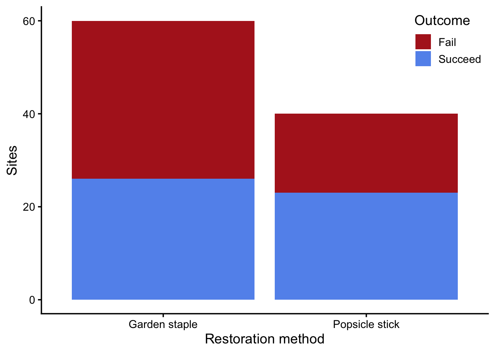

library(tidyverse)
theme_set(theme_classic(14))
set.seed(123)Learning objectives
In today’s lab you will…
- Run a permutation test to answer a “yes/no?” question
- Bootstrap a confidence interval to answer a “how much?” question
Eel grass restoration
Recall the eel grass restoration example from yesterday’s lecture. The data recorded whether attempts to restore eel grass were successful based on the method used (garden staple or popsicle stick) Figure 1.
restoration <- read_csv("data/eelgrass.csv",
show_col_types = FALSE)
glimpse(restoration)Rows: 100
Columns: 5
$ plot_id <dbl> 1, 2, 3, 4, 5, 6, 7, 8, 9, 10, 11, 12, 13, 14, 15, 16…
$ treatment <chr> "Garden staple", "Popsicle stick", "Garden staple", "…
$ success <dbl> 1, 1, 0, 0, 1, 1, 1, 0, 0, 0, 0, 0, 1, 1, 1, 1, 0, 1,…
$ shoot_density_m2 <dbl> 45.94241, 91.60585, 120.92760, 67.86314, 88.09977, 87…
$ success_fct <chr> "Succeed", "Succeed", "Fail", "Fail", "Succeed", "Suc…ggplot(restoration, aes(treatment, fill = success_fct)) +
geom_bar() +
scale_fill_manual(values = c("firebrick", "cornflowerblue")) +
labs(x = "Restoration method",
y = "Sites",
fill = "Outcome") +
theme(legend.position = "inside",
legend.position.inside = c(1, 1),
legend.justification = c(1, 1))

Permutation test
We want to know if the popsicle stick method works better for restoration than garden staples. This is a “yes/no?” question, so we’ll use a permutation test for our hypothesis. Recall the steps for hypothesis testing:
- Identify the TEST STATISTIC
- State your NULL and ALTERNATIVE hypotheses
- Calculate the OBSERVED test statistic
- Estimate the NULL DISTRIBUTION
- Calculate P-VALUE
- Compare p-value to CRITICAL THRESHOLD
Identify the test statistic
Q1: What is the appropriate test statistic for this question?
State your null and alternative hypotheses
Q2: What are your null and alternative hypotheses?
H0:
HA:
Calculate the observed test statistic
Q3: How would you calculate the test statistic for the sample?
Estimate the null distribution
This is the key part of a permutation test! Remember, our goal is to estimate the distribution of possible outcomes under the null hypothesis. To do that, we have to break the association between treatment and outcome.
Q4: What column should we shuffle to break the association between treatment and outcome?
Q5: Fill in the following code to perform one permutation and calculate the test statistic.
one_permutation <- ??? %>%
mutate(??? = sample(???,
size = length(???),
replace = FALSE))
permutation_props <- one_permutation %>%
group_by(???) %>%
summarize(???)
permutation_diff_props <- permutation_props$???[2] - permutation_props$???[1]
permutation_diff_propsThat gives us the value of the test statistic for just one permutation. To get a distribution, we have to repeat the process many times. Let’s do it 1,000 times.
Q6: Fill in the following code to perform 1,000 permutations and estimate the null distribution
permute <- function(i) {
???
}
null_distribution <- map_dbl(???, ???)Q7: Visualize the null distribution using a histogram and show where the observed test statistic falls
Calculate the p-value
The p-value is the probability of a test statistic at least as extreme as the observed, given the null hypothesis. In other words, what proportion of the null distribution exceeds the observed?
Q8: Calculate the p-value using the null distribution and observed test statistic
p_val <- ???
p_valInterpret the p-value
When interpreting the p-value, we compare it to a critical threshold, usually denoted with \(\alpha\). By convention, we usually set \(\alpha\) to 0.05.
Q10: Given \(p \gt \alpha\), which of the following statements is a correct interpretation and why?
Our evidence is consistent with the hypothesis that restoration method does not influence restoration outcome
We cannot reject the hypothesis that restoration method does not influence restoration outcome
Bootstrap confidence interval
Now let’s answer a “how much?” question. We want to estimate an interval that we think contains the population parameter. For that, we use bootstrapping.
Recall the steps for bootstrapping:
- Identify the TEST STATISTIC
- Substitute sample for population and draw BOOTSTRAP SAMPLES
- Estimate the BOOTSTRAP DISTRIBUTION of the test statistic
- Calculate the CONFIDENCE INTERVAL
Identify the test statistic
Q11: What is the appropriate test statistic for this question?
Draw bootstrap samples
This is the key part of bootstrapping! Remember, our goal is to estimate the variation of our population’s parameter due to sampling. To do that, we simulate the process of re-doing our experiment, using the original sample as a substitute for the population. To “re-do” our experiment, we have to keep the association between treatment and outcome.
Q12: Fill in the following code to draw one bootstrap sample.
one_bootstrap <- ??? %>%
??? %>%
mutate(??? = sample(???,
size = length(???),
replace = ???)) %>%
ungroup()Q13: Fill in the following code to draw 1,000 bootstrap samples.
Tip
list_rbind() will take a list of data frames and bind them row-wise into one data frame.
bootstrap <- function(i) {
??? %>%
mutate(trial = i)
}
bootstrap_samples <- map(???, ???) %>%
???Estimate the bootstrap distribution of the test statistic
Q14: Fill in the following code to calculate the test statistic for each bootstrap sample.
Q15: Visualize the bootstrapped distribution of the test statistic.
Calculate the confidence interval
A confidence interval (CI) is a range we are confident contains the population parameter. The bootstrapped distribution of the test statistic describes where we expect the population parameter to fall. So a 95% confidence interval, for example, spans the range from the 2.5% quantile of the bootstrap distribution to the 97.5% quantile.
Q16: Find the bounds of the 95% CI.
Tip
The quantile() function finds quantiles. It’s vectorized over the parameter probs, so you can find multiple quantiles at once
restoration_ci <- ???
restoration_ciQ17: Update your visual from Q15 to include the observed test statistic with a solid line and the confidence interval represented with dotted lines.
Permutation vs bootstrap
The visualization you created for Q7 shows the null distribution of the test statistic. The visualization you created for Q17 shows the bootstrapped distribution of the test statistic.
Q18: What did you do to make the null distribution center on zero? Specifically, what code?
Q19: What did you do to make the bootstrap distribution center on the observed test statistic? Specifically, what code?
Q20: What would happen to your bootstrap distribution if you sampled without replacement?